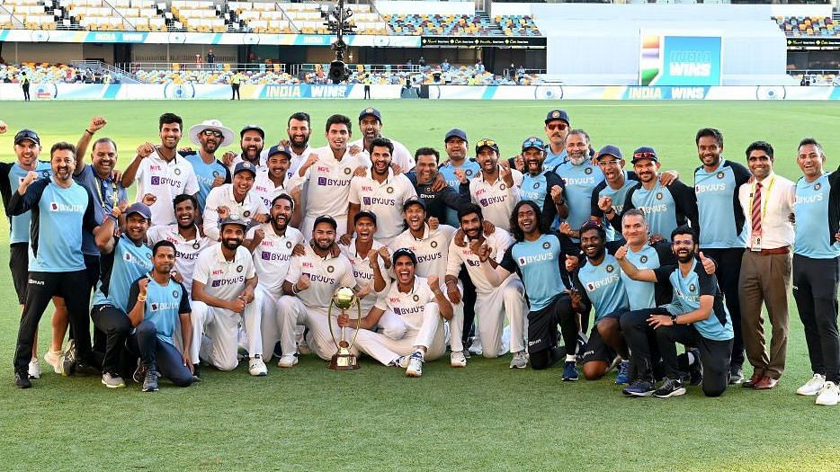
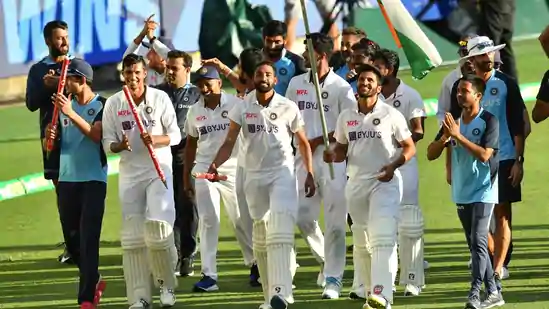
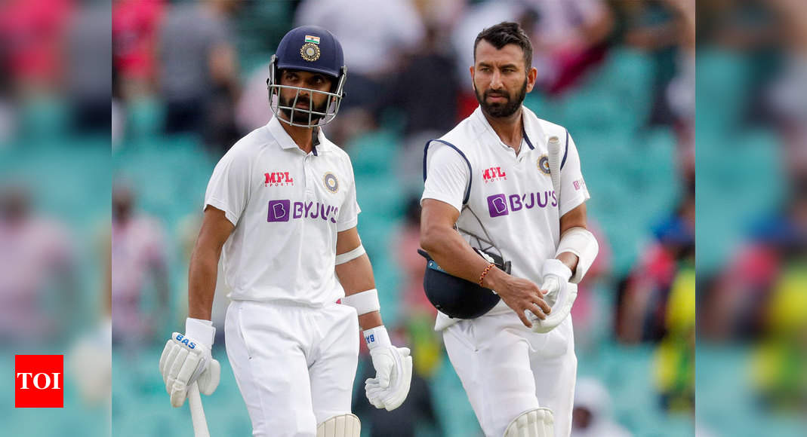
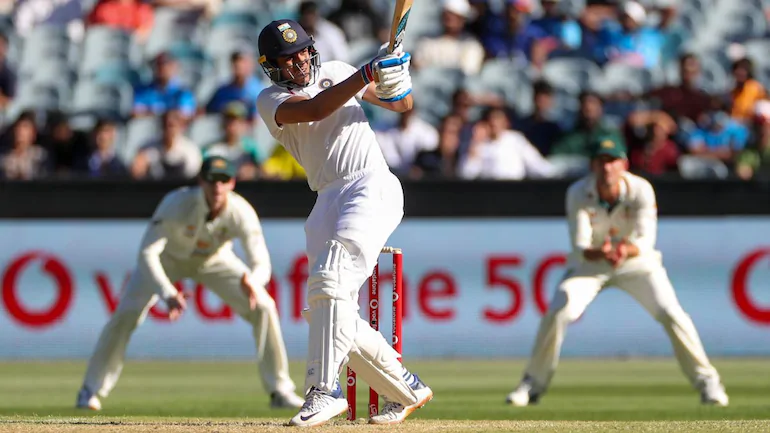

Today 01
India clinch Australia Test series with historic win at Gabba
India vs Australia, 4th Test: India have breached Australia's Gabba fortress to seal a stunning win on Day 5 and seal the series 2-1. Rishabh Pant hit a heroic 89, Cheteshwar Pujara did his job with a solid fifty and Shubman Gill hit a brave 91 as India gunned down the highest successful chase -- 328 in Brisbane.

26 01 21

Ind vs Aus, 4th Gabba Test: Thrilling Win For India, Clinch Border-Gavaskar Series 2-1
Shubhman Gill, Cheteshwar Pujara and Rishabh Pant the architects of a famous India win down under. Won the final test match by three wickets and seal the series 2-1 and make Gabba their home.
India vs Australia, 4th Gabba Test: Team India registered a emphatic second ever test series win in Australia. It’s a stellar comeback after a disastrous start in the first test. Resuming at four for none on the final day, India overhauled the target with 18 balls to spare in a match that went down to the wire. At the start, India lost experienced vice captain Rohit Sharma (7) early but young Shubhman Gill (91) rose to the occasion with an impressive knock that kept India in the hunt as Chesteshwar Pujara dug heels on the other end. Rahane did try to build on the good start with his short but attacking 24-run knock before his sift dismissal.
Under fire before the Test series, wicket-keeper and batsman Rishabh Pant hit 89 not out off 138 balls with his breathtaking strokeplay to take India to the finish line in the final overs of the game.India chased down 328 in the last innings and recorded India's third highest succesful chase in test match cricket. India scored a whopping 324 runs on the final day of the Brisbane test.
26 01 21

Gabba fortress breached as India defeat Australia by 3 wickets to win Border-Gavaskar Trophy
India have pulled off a record run-chase in a thrilling final session to hand Australia their first defeat at Brisbane’s Gabba ground since 1988 and clinch the four-Test series 2-1 to win the Border-Gavaskar trophy.Wicketkeeper Rishabh Pant starred with a swashbuckling 89 not out as the injury-depleted visitors overhauled the 328-run target with three overs to go, winning by three wickets on the last day of the series on Tuesday.
"You dont play for the crowd,
You play for the country"
26 01 21

Anand Mahindra Gifts SUVs To Six Indian Cricketers After Historic Test Series Win In Australia
Anand Mahindra hailed Team India's young brigade following their heroics in the recently-concluded Test series in Australia, and had a special surprise for them.
Team India players, after scripting one of the most memorable overseas wins in the recent Test series in Australia, received a rousing reception as they returned home from Down Under. India were forced to make lots of changes in their playing XI throughout the four-match series due to injuries and unavailability of players. The Test series saw the visitors handing debuts to as many as five players. Despite the constant chopping and changing in the XI and fielding an inexperienced side, India managed to win the series 2-1. On Saturday, Anand Mahindra took to Twitter to announce that he will gift six SUVs to the Indian cricketers who played their first Test in Australia and stood up to challenge